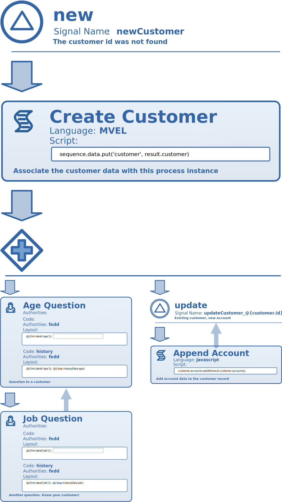
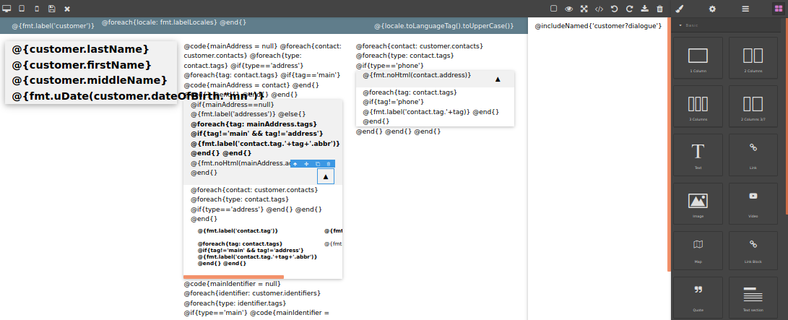
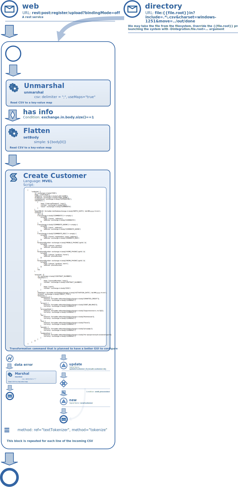
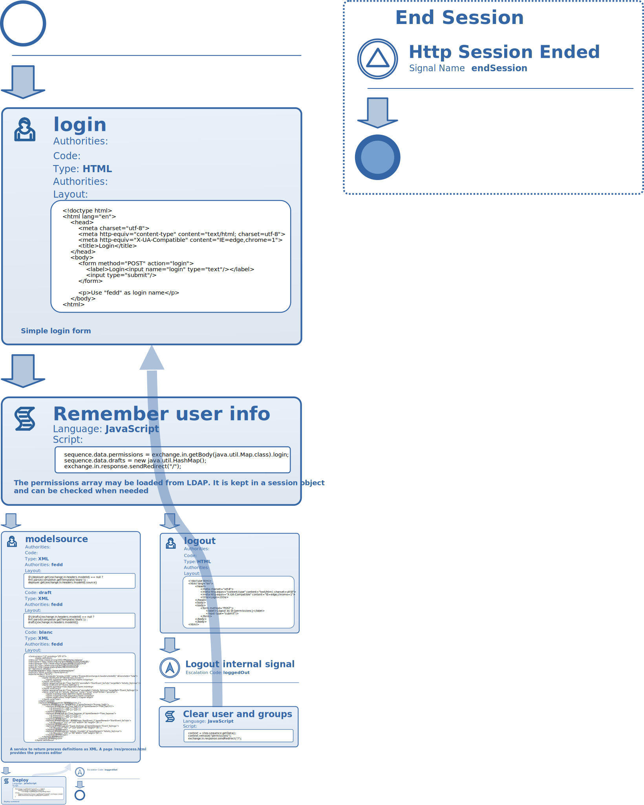
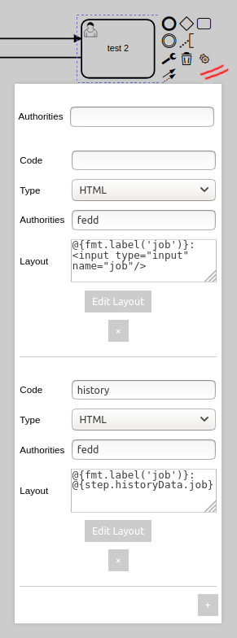

This is a Proof of Concept implementation of a flexible and visually configurable platform for creation of different kinds of applications, from small micro-services to enterprise-level information systems.
In a nutshell, Sborex is a visual flowchart execution engine with extended real-time and integration capabilities.
Download License Discuss on Reddit! Draft DocsIt runs on Java and starts a webserver on port 8585.
The Java application available for download is a demo app compiled to demonstrate how the system works. It contains a number of preconfigured entities which are deployed automatically upon the system start. Below is a short description of them.
The customer lifecycle process and a simple phone call interaction algorithm are defined as an executable sequence of blocks. The example below defines entry points for customer record acquisition and modification and a conversation plan of a set of questions, infinitely looped for the simplicity of demonstration.
The actual process can be of any complexity, contain nested sub-processes, invoke other processes by starting or signaling them, call external services or publish services to be called externally.

Alternatively you may define the customer entity using a BPMN-like visual diagram editor.
Below is an example of a customer record representation and a contact dialogue initial form (available under the hamburger menu button in the upper right corner). Different sections of the customer data are collapsible for convenience.
The customer data view is designed visually in a view editor:

The Register flowchart is an ETL procedure that defines a process of acquiring a customer data file via web or from a filesystem. This flowchart transforms the incoming data and then passes it to a Customer process, iterating over each line of the input file.

Note the integration points (the circles with an envelope icon) and format transformations that are serviced by an embedded Apache Camel instance.
The Register definition can be edited in the BPMN style editor too.
The process diagram below demonstrates how a technical service, simple or complex, can be designed in the system. Any of the Camel components can be used with or without little initial configuration, all made in a Sborex process definition:
This is a technical process that gets started for each of the new web sessions:

With the help of the LDAP integration the process may query your enterprise user database for roles and permissions, or you may configure access to a custom user storage, but currently it just stores the username entered by the user in the session context.
For demonstration simplicity this process also provides a process editor available to the user right on the app's home page.
The BPMN-style process editor is available too.
You are licensed to run and distribute the Sborex server you have downloaded from the link below under the following conditions: you agree to inform us about any commercial use of it, or about any public service running using it. For commercial use, you have to tell us who the customer is and how they are using Sborex. For any publicly available service, you have to provide us with its URL and some stats. If it's both, please provide both. You have to allow us to share this information publicly and privately.
To try it out, download the Java executable file below:
DownloadPlace it into a dedicated folder as it will create a database directory and technical files along with it.
Run it as a Java program:
java -jar sborex-poc.jar
After the system starts go to the system's web server using some modern browser:
(Replace localhost with the actual machine address if you are accessing it from outside the running host)
Log in as a user with the name fedd and start exploring the system.
In process definition editor pages, you may click the elements (rectangles, circles and diamonds) and choose the gear icon to see the element configuration.

To test the load and transform capabilities, go to
http://localhost:8585/register
and follow the instructions.
Please see the draft documentation that explains some of the systems configurations:
DocumentationIf the ports 8585, 8543 and 5060 are occupied on the host machine, we may override the default configuration by providing the different port numbers at start time:
java -jar sborex-poc.jar -Dintegration.web.port=8586 -Dintegration.web.port.ssl=8544 -Dintegration.sip.port=5061
If the server stops responding go to the installation directory where your sborex-poc.jar file is and delete all the files and subfolders inside it except the sborex-poc.jar itself to start the system from scratch.
The system is written in Java and is able to run on versions 8+. It doesn't employ the Spring Boot or Spring whatsoever. It's not based on any of the opensource BPMN engines out there.
Apache Camel included in the system is of version 2.24.0. It runs an embedded Jetty webserver for the web pages, rest services and websockets.
For the demo it is configured to run with Derby database, also embedded version. It can be configured to use PostgreSQL or any other relational database server as its datastore.
The awesome bpmn.io library is used for displaying and editing the process definitions in BPMN visual format. The native mobile and modern editors are also projected.
There is also a thirdparty web page designer that opens by Edit Layout button wherever the element is accompanied with a web page template. (Please note that it is not yet fully integrated.)
Sborex is currently not production ready and requires further technical improvements. The current version may experience loss of data and performance problems under high load.
The current process modeler is going to be redesigned and more visual editors added to provide a real "low code" experience.
The next steps will include embedding the neural networking solutions and distributed computing for higher loads.
My name is Fyodor "Fedd" Kravchenko. You may contact me via LinkedIn, drop me an email or lets talk freely on a Sborex subreddit!